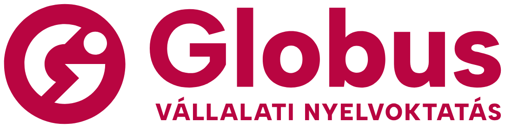

0 / 0 known · tudom
Tap the card to turn it over · Koppints a kártyára a megfordításhoz · Keys: Space, ← again, → I know it
Well done!
You know every card in this set.
Szép munka! Ebben a csomagban minden kártyát tudsz.
Everything from the course, lessons 1–99 · Ismétlés a záróvizsgára

You know every card in this set.
Szép munka! Ebben a csomagban minden kártyát tudsz.